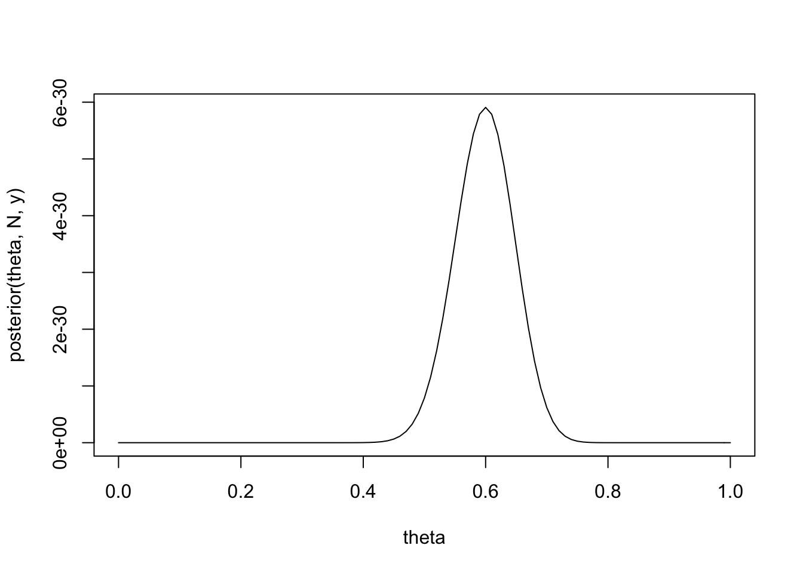
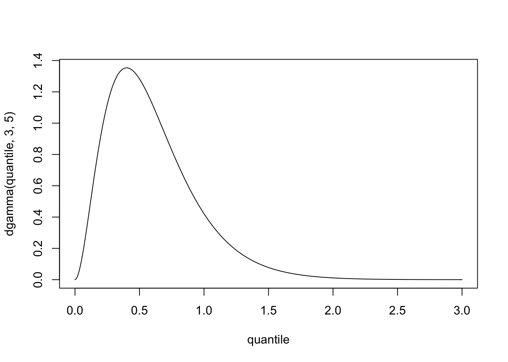
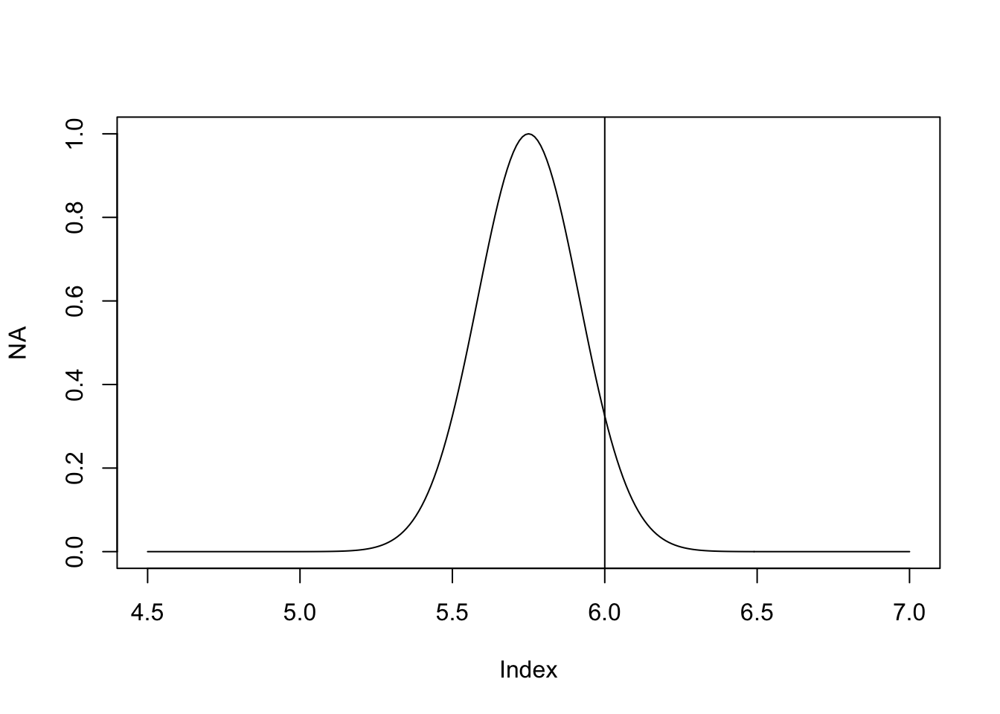
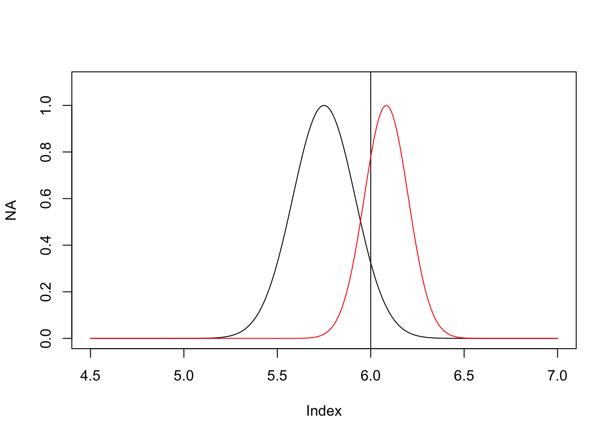

Chapter 3 Single-Parameter Models
Our dive into Bayesian stats will begin with single-parameter models. These are distinct from multi-parameter models. The difference being the number of unknowns in the models: if we’re modeling some Poisson distributed data, the density function has one parameter, \(\lambda\), that is unidimensional. If our data is normally distributed and we don’t know anything about the model, we are missing two parameters: \(\mu\) and \(\sigma\).
3.1 Estimating a binomial model
If we have data that naturally arise from a sequence of \(n\) trials from a large population, and each trial can either be a “success” or a “failure” (or some other two outcome framework), then the problem is suitably modeled by a binomial distribution. Since the trials are IID, we can simply define some parameter \(\theta\) which represents the proportion of “successes” in the population. Thus, the binomial sampling model is:
\[ p(y|\theta) = Bin(y|n,\theta) = {n \choose y} \theta^y (1-\theta)^{n-y} \]
Here, \(n\) is taken as a fixed given, so we can drop it from the lefthand.
To perform Bayesian inference in the binomial model, we’ll first specify a prior distribution over \(\theta\), our only parameter. For simplicity’s sake, we can pick a prior which specifies absolutely no information about the value of \(\theta\): the uniform distribution on \([0,1]\). Remember, \(\theta\) is the proportion of times something happens in a population, so it makes sense to work on the domain from 0 to 1.
Keep in mind Bayes’ rule: \(p(\theta|y) \propto p(\theta)p(y|\theta)\).
\(p(\theta)\) is a scalar value (such as, in this case, \(1/n\)), and is equal to the probability of a uniform density draw, thus it can be “hidden” in the proportionality. Moreover, the binomial coefficient from \(p(y|\theta)\) can be “hidden” since it doesn’t rely on \(\theta\).
Now, remember the density function of the Beta distribution:
\[ f(\alpha, \beta) = \frac{\Gamma(\alpha + \beta)x^{\alpha-1}(1-x)^{\beta-1}}{\Gamma(\alpha)\Gamma(\beta)} \]
We can calculate the posterior of \(p(\theta|y)\) using the information above, and note the form after:
\[ p(\theta|y) \propto \theta^y (1-\theta)^{n-y} \]
We can see here that the unnormalized posterior density is a form of the Beta distribution, specifically:
\[ \theta|y \sim Beta(y + 1, n - y + 1) \]
This is helpful because we now have a closed, analytical form of the posterior distribution which makes use of our data. This is great because when we want to describe our posterior by, e.g. the mean or standard deviation, there already exist closed-form solutions (the mean of the Beta distribution is \(\frac{y+1}{n+2}\)).
3.2 Summarizing posterior inference
One key relationship we can draw at this point is: the posterior distribution is centered at a point that falls between what we know from the prior distribution and what we know from the data, and this compromise is controlled to a greater extent by the data as the sample size increases.
With only one parameter, we can easily plot the posterior distribution, although it gets a little trickier as we add more parameters.
For example, here’s the last binomial distribution example:
posterior <- function (theta, n, y) theta^y * (1-theta)^(n-y)
# we have 100 births total
N <- 100
# 60 of those births were females
y <- 60
# the ratio of female births will fall between 0 and 1
theta <- seq(0,1,by=0.01)
plot(theta, posterior(theta, N, y), type = "l")
To interpret this, we have the unnormalized posterior density on the Y-axis, and our only parameter, \(\theta\), on the X-axis. We see that the probability of \(\theta\) being between out 0.5 and 0.7 is extremely high. Well, we did have 60 successes out 100 trials, so it makes sense that the underlying parameter for this would lie around 0.6.
One other key descriptive interval we can define for our posterior distribution is the highest posterior density region, which is the set of values that contains \(100(1-\alpha)\%\) of the posterior probability. This is a useful interval similar to just a percentile interval, but allows us to characterize distributions with e.g. more than one mode.
3.3 Informative Priors
How do we go about constructing a prior though? There are two guides for how to decide: first, under the population interpretation, the prior distribution should represent a population of parameter values; second, under the state of knowledge interpretation, the prior should represent our knowledge (or uncertainty) about the parameter as if its value were a random draw from the prior.
Typically, the prior should contain all possible realistic values of the parameter, but need not be concentrated around any one value. Often, the data will far outweigh the prior’s information (NB: this makes me wonder what the exact purpose of an intial prior is).
An alternative to the uniform prior distribution we used in our last example is the Beta distribution. With the form \(p(\theta)\propto \theta^{\alpha-1}(1-\theta)^{\beta-1}\), where we have two parameters, \(\alpha\) and \(\beta\), which can be seen as “prior successes” and “prior failures.” These are also known as hyperparameters, as are any parameters of the prior distribution.
Applying Bayes’ rule and we wind up with the posterior density for \(\theta\) as:
\[ p(\theta|y) \propto \theta^y(1-\theta)^{n-y}\theta^{\alpha-1}(1-\theta)^{\beta-1} = \text{Beta}(\theta|\alpha+y, \beta+n-y) \]
Which is to say, the binomial likelihood bound to a Beta prior leaves us with a Beta posterior. When the posterior is of the same parametric form as the prior, we call this a conjugate form. Conjugate priors are great because they’re easy to compute (both analytically and computationally), and they improve our ability to understand new data.
The standard distributions — binomial, normal, Poisson, and exponential — have natural conjugate prior distributions, which can be easily looked up. For an example though, we’ll examine the Poisson distribution and an example for it below.
Poisson model
The Poisson distribution appears when studying count data. The probability distribution of a single observation is
\[ p(y|\theta) = \frac{\theta^ye^{-\theta}}{y!}\quad \text{for} y=0,1,2,\ldots \]
Thus, if we have \(n\) IID observations, the likelihood is
\[ p(y|\theta) = \prod_{i=1}^n p(y_i|\theta) \propto \theta^{\sum_{i=1}^n y_i} e^{-n\theta} \]
We’ll skip some arithmetic found in the text and just say that the conjugate prior for the Poisson distribution is
\[ p(\theta) \propto e^{-\beta\theta}\theta^{\alpha-1} \]
which is a gamma density with parameters \(\alpha\) and \(\beta\): Gamma(\(\alpha,\beta\)). With this prior, we can calculate the posterior for the Poisson as
\[ \theta|y \sim \text{Gamma}(\alpha+n\bar{y},\beta + n) \]
where \(n\) is the number of observed data and \(\bar{y}\) is the mean of the IID observations.
3.3.1 Estimating a rate from Poisson data: an idealized example
Suppose we’re interested in modeling the number of people who die annually due to asthma in a certain U.S. city. Let’s say, last year we know 3 out 200,000 people died, or roughly a mortality rate of 1.5 cases per 100,000 persons per year.
We can express this via a sampling distribution of \(y\), the number of deaths in a city of 200,000 in one year, as Poisson(\(2.0\theta\)), where \(\theta\) represents the true underlying long-term asthma mortality rate (measured in cases per 100,000 people per year). We have our one observation, \(y=3\), and also the “coefficient” of 2.0, to adjust for \(\theta\) being defined in terms of 100,000.
First, we’ll establish a prior distribution. We can scour some previous reports and find that in Western nations, the typical asthma mortality rate is around 0.6 per 100,000 persons per year. We also believe that it’ll be very unlikely for rates to exceed 1.5 per 100,000. We know that a convenient conjugate prior for the Poisson distribution is the gamma distribution. Through a little trial and error, we find that Gamma(\(3.0,5.0\)) gives a pretty good approximation to our world knowledge: the mean is 0.6 and 97.5% of the density is below 1.44. Through a quick simulation we can verify this: mean(rgamma(1000, 3, 5))=0.601 and qgamma(0.975, 3, 5)=1.445. This prior density takes the shape of:
quantile = seq(0,3,by=0.01)
plot(quantile,dgamma(quantile, 3, 5), type = "l")
Given the likelihood and the prior, we can calculate the posterior distribution, given above. With \(y=3.0\) and \(x=2\) (the exposure of the Poisson, described in the text), we can find the new posterior parameters make
\[ \theta|y \sim \text{Gamma}(6.0, 7.0) \]
Using this, for example, we can calculate the posterior probability that the long-term mortality rate from asthma in this city being over, e.g. 1.0 per 100,000 persons per year, is pgamma(1.0, 6, 7, lower.tail = F)=0.301, or about 30.1%.
There’s a good exponential distribution example in the text that I won’t repeat here; I encourage it as review. One key topic I will mention which is introduced in this example is the predicitive distribution — the marginal distribution of \(y\), averaging over the prior distribution of \(\theta\) — which is interpreted as the distribution of possible unobserved values conditional on the observed ones.
3.4 Noninformative and Weakly Informative Priors
Without knowledge of an underlying population, it can be difficult to construct a prior distribution. Sometimes, one might instead construct a vague, flat, diffuse, or noninformative prior. Sometimes, one might have a little knowledge of the population, and wish to construct a weakly informative prior. Noninformative priors can be uncomfortably subjective (e.g. if there is no clear choice for a vague prior distribution) and introduce issues in later calculations of the posterior. As the number of parameters in a given model grows, we may wish to turn toward hierarchical models, something we’ll get to later.
For an example, a noninformative prior on a binomial likelihood might be the conjugates Beta(\(\frac{1}{2}, \frac{1}{2}\)) (the Jeffreys’ prior density based upon the Fisher Information of the binomial) or Beta(\(1, 1\)) (the Bayes-Laplace uniform prior density). Yet, it is still possibly to apply an uninformative prior if we go to the work to check that the posterior density is finite for all \(y\) over \(\int p(\theta|y)d\theta\) (it is proper) and to check the sensitivity of posterior inferences to our assumptions based upon convenience (to be discussed).
We may, though, have some reasonably knowledge of the population beforehand and wish to construct a weakly informative prior. For example, in a sex ratio problem, we may wish to begin modeling the binomial data with Beta(\(20,20\)), which is centered at 0.5 and contains a reasonable amount of information about the ratio of males to females.
3.5 Single-parameter Example
library(tidyverse)## ── Attaching packages ─────────── tidyverse 1.3.0 ──## ✓ ggplot2 3.2.1 ✓ purrr 0.3.3
## ✓ tibble 2.1.3 ✓ dplyr 0.8.4
## ✓ tidyr 1.0.2 ✓ stringr 1.4.0
## ✓ readr 1.3.1 ✓ forcats 0.4.0## ── Conflicts ────────────── tidyverse_conflicts() ──
## x dplyr::filter() masks stats::filter()
## x dplyr::lag() masks stats::lag()Suppose we have a Bulgarian friend named Georgi (Bulgarians don’t get enough recognition and Georgi is a good name). The average height of men in Bulgaria is 5 ft 9 in. We don’t however know the variance of this estimate, so let’s just say that most (95%) of men are between 5 ft 5 in and 6 ft 1 in, thus the SD is \(\sigma = \frac{2}{12}\) (2 inches). Now, Georgi just got his height measured for the first time in years. What can we say about the national average then?
What’s the probability, after adding Georgi’s height to the national database that the average Bulgarian man is taller than 6’? Our parameter is the male Bulgarian height, and we have one data point (for Georgi), and we have a value to compare to: 6 feet.
We use \(\mu\) to denote the height of Bulgarian men. We’re pretending that we know the population variance, \(\sigma^2 = \frac{1}{36}\). We want to know, after adding Georgi’s height \(y\), what is P(\(\mu > 6 | \sigma^2, y\))?
We first need a likelihood and a prior. The likelihood \(p(y|\mu)\) is the gaussian equation \(\mathcal{N}(y|\mu,\sigma^2)\). We’ll choose a conjugate prior for simplicity, another exponential of quadratic form (just like the normal). This comes with two hyperparameters: \(\mu \sim \mathcal{N}(\mu_0,\tau_0^2)\) (a mean and variance).
Here, \(\mu_0\) is our starting mean of \(5.75\) and we assume we know our starting variance \(\tau_0^2 = \frac{1}{36}\). This is the same as \(\sigma^2\) because our new sample of Georgi’s height supposedly follows this assumed variance. Let’s set all our knowns right now:
parameter = seq(4.5, 7, by=0.01)
mu_0 = 5.75 # prior mean
sig_0 = 1/6 # population SD
tau_0 = sig_0 # prior SDWe can visualize our prior distribution over \(\mu\) given our starting \(\mu_0\) and \(\tau_0^2\):
plot(NA, xlim = c(4.5, 7), ylim = c(0, 1))
lines(parameter, exp(-1/(2*tau_0^2) * (parameter - mu_0)^2), type = "l")
abline(v = 6)
Only the x-axis are heights (4 ft 6 in to 7 ft 0 in) and on the y-axis is the unnormalized density.
Using this, we can answer the question: without taking into any new data, what’s the probability that a man is taller than 6 ft? 1-pnorm(6, mu_0, tau_0) = 0.067 is the probability of Bulgarian men, on our prior, being taller than 6 feet. Hence, there’s only a 6.7% chance that a random sample from our prior of male Bulgarian heights is over 6 ft!
The conjugate prior implies the posterior will take on the same form. We can analytically determine the posterior by multiplying the prior and the likelihood with the single datum:
\[ p(\mu|y) \propto \exp\big(-\frac{1}{2}\big(\frac{(y-\mu)^2}{\sigma^2} + \frac{(\mu - \mu_0)^2}{\tau_0^2}\big)\big) \]
We can simplify this a bit for:
\[ p(\mu|y) \propto \exp\big(-\frac{1}{2\tau_1^2}(\mu - \mu_1)^2\big) \]
where the terms were collected as: \(\tau_1^2 = \frac{1}{1/\tau_0^2 + 1/\sigma_0^2}\) and \(\mu_1 = \frac{\mu_0 / \tau_0^2 + y/\sigma^2}{1/\tau_0^2 + 1/\sigma^2}\). This is all to say that we’re incorporating our new datum into our known information (the prior) by means of the likelihood. \(\tau_1^2\) and \(\mu_1^2\) are updated parameters which we can use after this as well with new data.
Translated into code:
posterior <- function (y) {
# set the posterior mean, a weighted average of the prior and the likelihood
mu_1 <- (mu_0/tau_0^2 + y/sig_0^2) / (1/tau_0^2 + 1/sig_0^2)
# set the posterior variance (note: not the SD, watch the exponentials later)
tau_1 <- 1/(1/tau_0^2 + 1/sig_0^2)
return(list(mu_1 = mu_1, tau_1 = tau_1))
}Now, we measured Georgi at the beginning of this example. His height ended up being 6 ft 5 in. He’s a bit on the taller side, so how does this change our belief about Bulgarian men being taller than 6 ft?
Here’s the unnormalized prior and the unnormalized posterior (including information about Georgi):
posterior_params <- posterior(6 + 5/12) # 6 feet plus 5 inches
posterior_params## $mu_1
## [1] 6.083333
##
## $tau_1
## [1] 0.01388889# first, the prior in black
plot(NA, xlim = c(4.5,7), ylim = c(0, 1.1))
lines(parameter, exp(-1/(2*tau_0^2) * (parameter - mu_0)^2), type = "l")
# second, the posterior in red (with a vertical line for 6 ft)
national_height <- 6
abline(v = national_height)
par(col = "red")
lines(parameter, exp(-1/(2*posterior_params$tau_1) * (parameter - posterior_params$mu_1)^2), type = "l")
It’s a little difficult to see, but the posterior density has gotten slightly narrower to account for the increase in precision of the estimate. We also see a pretty significant shift to the right.
What’s the probability that a randomly sampled man in our posterior distribution will be over 6 ft? By integration: 1-pnorm(6, 6.0833, sqrt(0.01389)) = 0.76. We went from a mere 7% chance to now over 76%! How?
…
What’s the probability that a randomly sampled future man will be over 6 ft given our one new measurement from Georgi? We will construct the posterior predictive distribution, \(p(\tilde{y}|y)\), by integrating out the parameter \(\mu\). Due to the uncertainty from the start in \(\sigma^2\) and in \(\mu\) through \(\tau_1^2\), we add the variances together to account for unknowns in the predictive variance:
1-pnorm(6, posterior_params$mu_1, sqrt(sig_0^2 + posterior_params$tau_1))## [1] 0.6584543Or, approximately 66% probability that a future man will be over 6 ft.